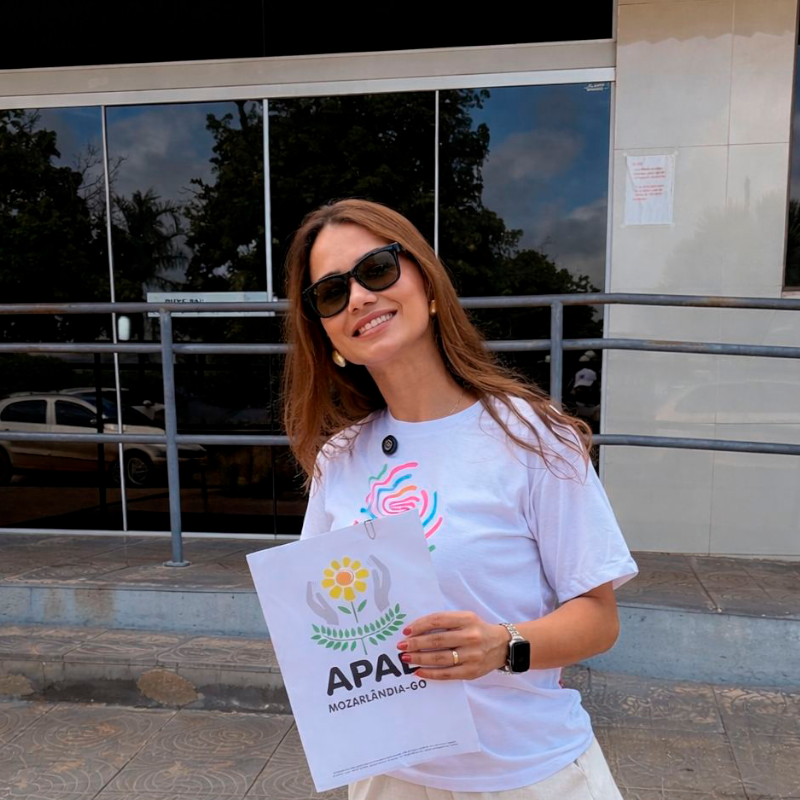
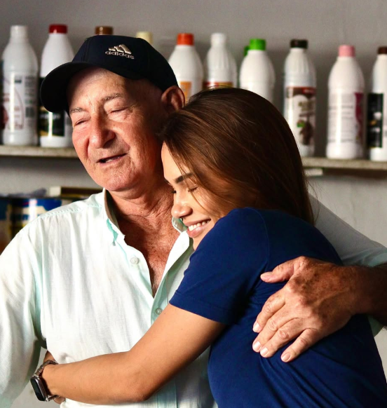
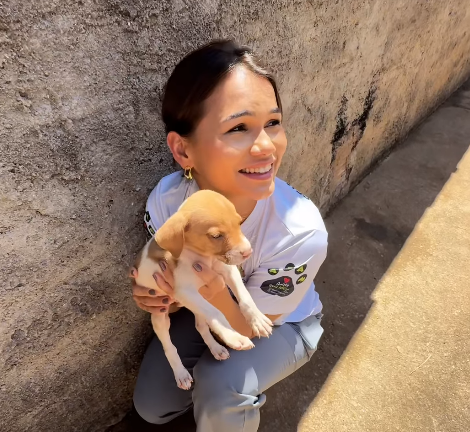
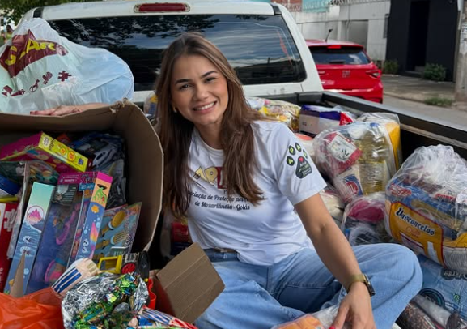

APAE · inclusão
Madrinha da APAE em Mozarlândia e Nova Crixás, acompanha o trabalho de quem acolhe pessoas com deficiência e suas famílias.
Acompanhar registrosVale do Araguaia · Goiás
Brenda Gontijo registra sua trajetória pública pelo interior de Goiás: família, trabalho, propósito, terceiro setor e as histórias que nascem quando a política volta a olhar para gente de verdade.
Perfil
Mãe, empresária, comunicadora, bacharel em Direito, madrinha da APAE e da APAM, Brenda carrega uma relação profunda com o interior de Goiás. Sua caminhada se apresenta aqui como memória, presença e escuta.


Memória de infância
Em Mozarlândia, na casa do avô João Coelho e da vó Nenzinha, Brenda deu seus primeiros passos. Ao rever fotografias antigas e visitar a sorveteria do Sr. Luís, reencontrou o sabor de infância que sustenta sua forma de olhar para Goiás: com gratidão, simplicidade e pertencimento.
“Ontem estávamos recordando olhando as fotos e com o mesmo sabor de infância...”
Empatia + causas
Para Brenda, lutar pelo próximo nunca foi frase de efeito. É um jeito de olhar a vida: reconhecer, em cada cidade, o rosto de quem cuida, trabalha e resiste.

Madrinha da APAE em Mozarlândia e Nova Crixás, acompanha o trabalho de quem acolhe pessoas com deficiência e suas famílias.
Acompanhar registros
Como madrinha da APAM, abraça a causa de quem dedica a vida a proteger os animais e cuidar do mais frágil.
Acompanhar registros
Em cada projeto social que visita, reconhece o trabalho silencioso de quem transforma vidas com tempo, amor e esforço.
Acompanhar registros“O social transforma vidas.”
Estar perto de quem faz isso acontecer é, antes de tudo, um chamado.Boletim · diário de caminhada
Cada cidade rende uma página. Aqui ficam encontros, conversas, memórias e aquilo que ficou no coração — sem promessa, sem pedido, apenas a caminhada contada de perto.
Meu carinho pelo terceiro setor só cresce — o social transforma vidas. Em Pires do Rio encontrei gente boa, gente simples, onde nossos valores se encontram. Voltei com o coração transbordando gratidão.
Voltei à casa do meu avô João Coelho e da minha vó Nenzinha, onde nasci, em 1996. Olhamos fotos antigas e, com o mesmo sabor de infância, passei na sorveteria do Sr. Luís.
[Relato em primeira pessoa, com três a quatro frases. O que viu, quem conheceu, o que ficou. Sem pedir nada: apenas contando.]